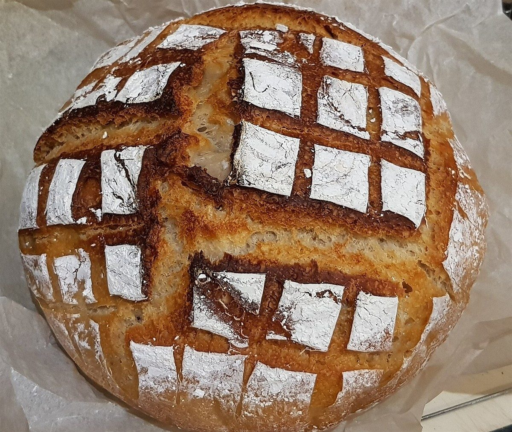
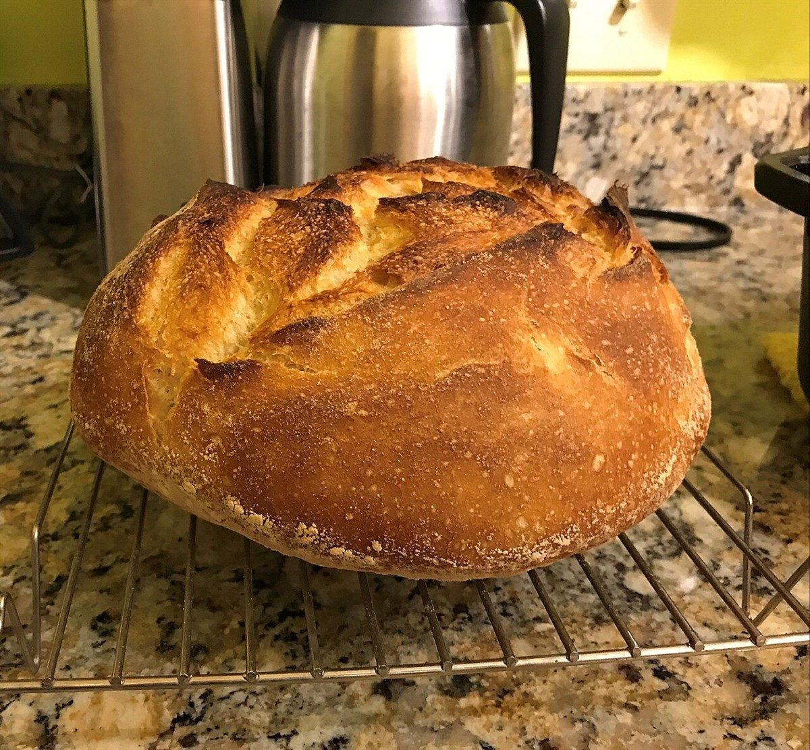
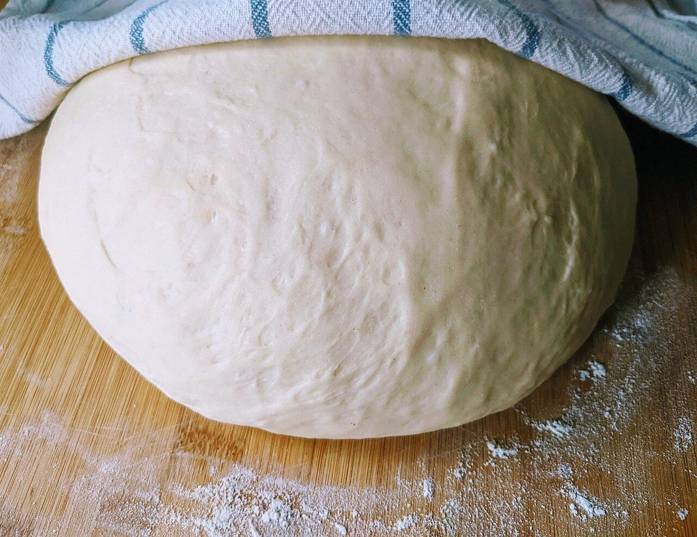

麺棒の往復 2 / 5
2往復店のこと
麺棒をもう一度転がして戻すと、生地は少し広がります。ここでは、確認できていることを広げて整理します。
このページの「想像してみる」部分は、制作側が想像して書いたものです。お店の実際の様子・考え・メニューとは関係がありません。
確認できていること
- 店名は「コロパン」、業種はパン屋
- 所在地は徳島県小松島市中田町出口５０−１
- 電話番号は070-8559-1138
- Instagramのアカウントは @coropain2023
- 営業時間・定休日・メニュー・価格・ご予約・駐車場は準備中

想像してみる
生地がふくらむ、丸い形。
「コロ」という響きから、制作側は丸いものを連想し、丸い形のパンの写真を選びました。お店のパンの形や種類を示すものではありません。


